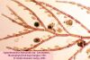
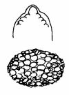
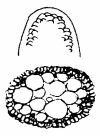
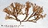
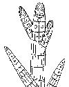

3.-
Tipos de talo según su organización histológica:
|
Talos filamentosos
|
Cada parte del talo está
constituída por una sola fila de células, o bien
por un filamento axial rodeado por una o dos capas de células
exteriores, formando ramas muy delgadas que no crecen en espesor.
|
Filamentos haplósticos sencillos
(uniseriados)
|
Cada rama es una fila de células

|
Filamentos haplósticos corticados

|
Las ramas están formadas por un filamento
de grandes células axiales vacuolizadas rodeadas (total o
parcialmente) por una capa de pequeñas células
corticales asimiladoras, de forma que en la lupa se observan
segmentos, cada uno de los cuales se corresponde con una célula
axial.
|
Filamentos polisifonales

|
Las ramas están formadas por segmentos
que se forman por divisiones tangenciales de una cálula axial,
que queda así rodeada por un número fijo de células
pericentrales que son tan largas como el segmento
|
Talos
pseudoparenquimáticos
|
Los sistemas de filamentos se
adhieren entre sí formando paquetes con apariencia de tejidos,
hasta tal punto que es muy difícil diferenciar esta
organización de los verdaderos parénquimas.
|
Uniaxiales
Cada rama del talo lleva un solo filamento central, el resto del
espesor está formado por filamentos cortos y muy ramificados
|

|
Multiaxiales
Cada rama lleva en el centro un haz de filamentos centrales, que crecen
de forma paralela. La parte exterior puede estar formada por cortos
filamentos libres o soldados entre sí formando una corteza
|

|
Talos parenquimáticos

|
Las células meristemáticas
se dividen en dos o más planos, formando verdaderos tejidos
en forma de láminas con una o varias capas de
células o en forma de filamentos gruesos o cilindros con
numerosas capas de células
|

|